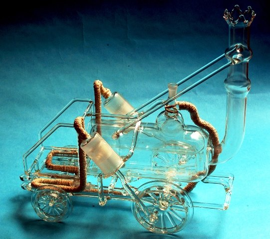
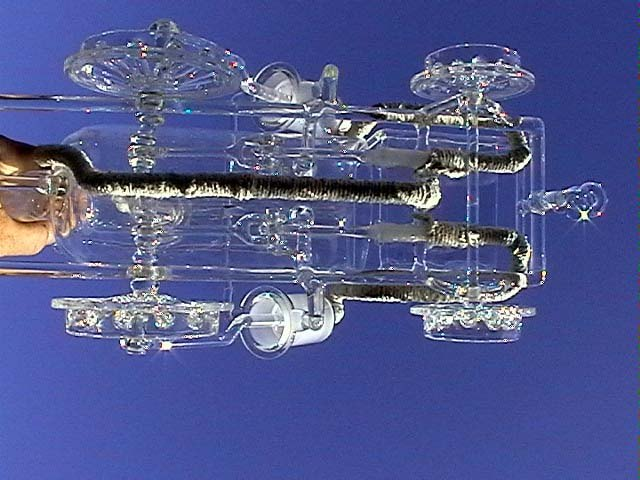
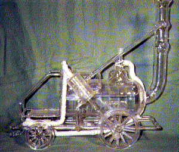
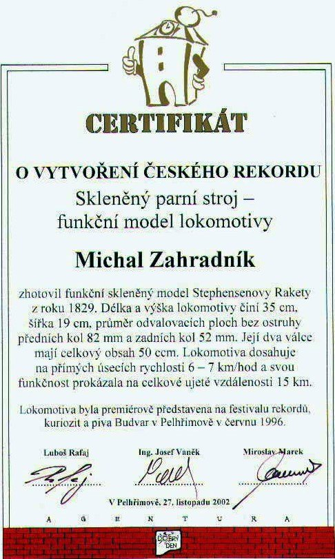

Stephensonova lokomotiva
Stephensonova lokomotiva z roku 1829
Povzbuzen neúspěchy předchozích konstrukcí jsem se vrhl na další model. K jeho vytvoření mě vedla poznámka organizátora, na návštěvě výstavy parních strojů v Malchowě v Německu, že bych měl vyrobit nějaký funkční model pro rozchod modelové železnice 127 mm.







Základem se mi staly osvědčené válce a šoupata z předchozích modelů. Kvůli přibližné podobě jsem tentokrát použil jenom dva válce. Nakonec se to projevilo jako dostačující, protože pohybová energie modelu zastoupila setrvačník. Větším konstrukčním problémem byla ale samotná přední osa. Vyosení excentrů je po 180° pro válce, dále po 180° pro šoupata, ale ty musí být zase úhlově posunuty o 45° vzhledem ke vzájemné nesouosé pozici. Navíc celá osa měla již přitavená kola, ojnice pro šoupata a ložiskovou přípravu pro rám lokomotivy. Ač se to nezdá, tak tento díl je ze všech mých modelů jeden z nejobtížnějších.
Protože konstrukce neumožňovala použít přehřívanou páru, kdy se čerstvá pára vede ještě jednou skrz topeniště, aby se docílilo vyšší teploty, a přívody k šoupátkům a následně k válcům byly dost dlouhé, vykazovala lokomotiva při provozu zajímavý efekt. Dokud na ni svítilo sluníčko, tak jela, ale ve stínu se díky kondenzaci vody zastavovala. Problém jsem pak vyřešil omotáním přívodního potrubí azbestovou šňůrou jako izolací. Po této úpravě již lokomotiva jezdila i ve stínu :D
Jízda skleněné Stephensonovy lokomotivy po kolejích otevřít na YouTube


Lokomotivě byl dne 27. 11. 2002 vystaven certifikát o vytvoření českého rekordu.